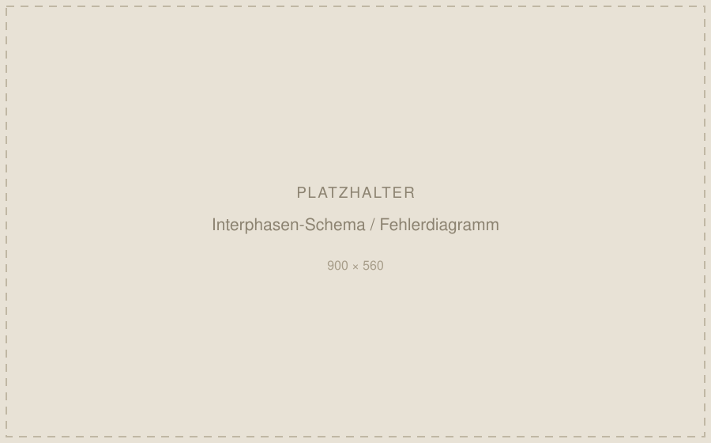

- Kontext
- Masterarbeit, FAU Erlangen-Nürnberg
- Zeitraum
- 10/2025 – 02/2026
- Feld
- Faserverstärkte Verbundwerkstoffe
Inverse Parameteridentifikation an Faser-Matrix-Grenzflächen
Die Parameter der Interphase zwischen Faser und Matrix entscheiden über das Bauteilverhalten, lassen sich messtechnisch aber kaum direkt erfassen. Ich habe ein physikinformiertes neuronales Netz entwickelt, das sie aus den effektiven Kompressions- und Schubmoduli zurückrechnet — die Mikromechanik der Homogenisierung steckt dabei in der Verlustfunktion selbst.
Vorhersagefehler unter 5 %

PyTorch · NumPy · SciPy